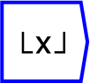

Next: frac
Up: Functions/Unary Operators
Previous: abs
Contents

The greatest integer less than or equal to
 .
.
The operator can be placed on the canvas in two ways:
- From the Functions (``function'') toolbar; or
- By typing the letters ``floor'' on the canvas and then pressing the
Enter key.